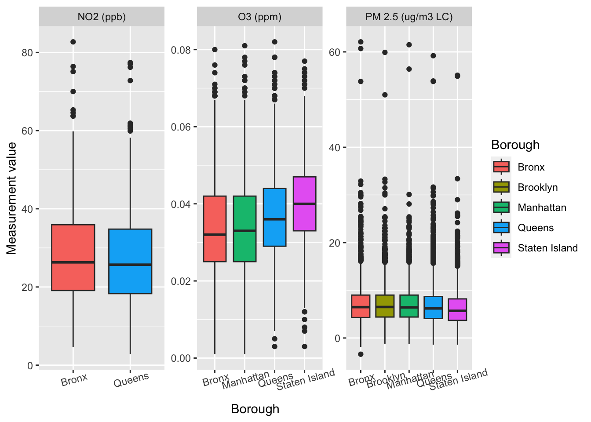
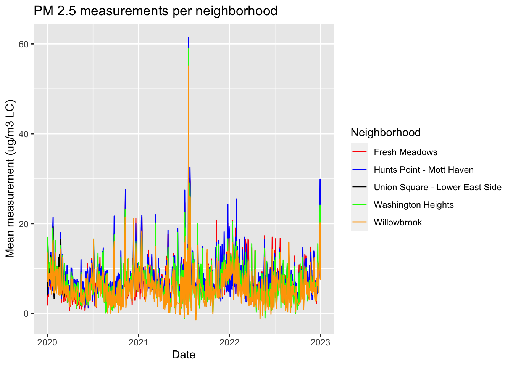
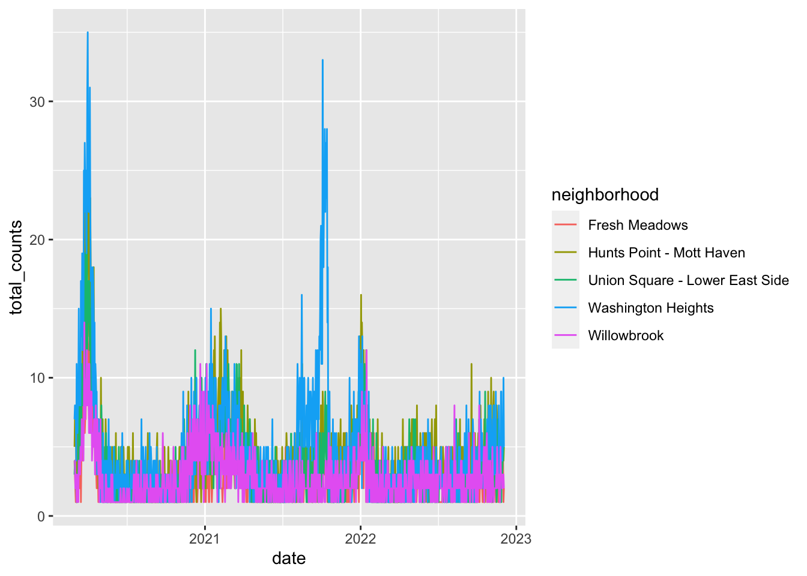

Exploratory Data Analysis and Visualizations
Air Pollutants
The Air Quality data is split into two parts. One consists of seasonal and yearly data, which gives us an idea of pollution in all of New York City’s neighborhoods from 2010-2022, while the other involves daily data, which is more precise with regards to time and location where the measurement was done, but is not available for all neighborhoods in New York City and only spans from 2021-2022.
Seasonal and Yearly Data
We began by examining the seasonal/yearly data to get a general idea of NYC’s air quality trends between 2010-2021. From the histogram and the boxplots below, it appears that PM2.5 concentrations have been steadily decreasing since 2010. The same trend is evident for NO2, but the decrease seems to be much more gradual relative to PM2.5. Finally, Ozone does not appear to be increasing or decreasing over the time period, but further analysis is needed to confirm this trend.
Histogram of levels of NO2, O3 and PM2.5 by year
all_years = sort(unique(c(as.numeric(df_histo_pm2.5$year),
as.numeric(df_histo_NO2$year),
as.numeric(df_histo_ozone$year))))
combined_fig = plot_ly()
pollutants_data = list(df_histo_pm2.5, df_histo_NO2, df_histo_ozone)
pollutant_names = c("PM2.5", "NO2", "O3")
pollutant_units = c("PM2.5 Concentration (mcg/m3)", "NO2 Concentration (ppb)", "O3 Concentration (ppb)")
for(i in seq_along(pollutants_data)) {
for(year_value in all_years) {
year_data = filter(pollutants_data[[i]], year == as.character(year_value))
combined_fig = combined_fig |>
add_histogram(data = year_data,
x = ~data_value,
name = as.character(year_value),
marker = list(opacity = 0.6),
visible = i == 1)
}
}
num_years = length(all_years)
buttons = lapply(seq_along(pollutants_data), function(i) {
visibility = c(rep(FALSE, num_years * (i - 1)),
rep(TRUE, num_years),
rep(FALSE, num_years * (length(pollutants_data) - i)))
list(method = "update",
args = list(list("visible" = visibility),
list("title" = paste(pollutant_names[i], "Concentration"),
"xaxis.title" = pollutant_units[i])),
label = pollutant_names[i])
})
combined_fig = combined_fig |>
layout(title = "Comparison of Pollutant Concentrations",
barmode = "overlay",
xaxis = list(title = "Concentration"),
yaxis = list(title = 'Count of Measurements'),
updatemenus = list(list(type = "dropdown", buttons = buttons)))
combined_figBoxplots of levels of NO2, O3 and PM2.5 by year
add_yearly_boxplots = function(data, years, name_prefix, visible) {
for(year_value in years) {
year_data = filter(data, year == as.character(year_value))
combined_boxplot_fig <<- combined_boxplot_fig |>
add_trace(data = year_data,
y = ~data_value,
type = 'box',
name = paste(name_prefix, year_value),
visible = visible)
}
}
combined_boxplot_fig = plot_ly()
add_yearly_boxplots(df_histo_pm2.5, all_years, "PM2.5", TRUE)
add_yearly_boxplots(df_histo_NO2, all_years, "NO2", FALSE)
add_yearly_boxplots(df_histo_ozone, all_years, "O3", FALSE)
buttons = lapply(seq_along(pollutants_data), function(i) {
visibility = c(rep(i == 1, num_years), rep(i == 2, num_years), rep(i == 3, num_years))
list(
method = "update",
args = list(
list("visible" = visibility),
list(
"title" = paste(pollutant_names[i], "Concentration"),
"yaxis.title" = pollutant_units[i]
)
),
label = pollutant_names[i]
)
})
combined_boxplot_fig = combined_boxplot_fig |>
layout(
title = "Comparison of Pollutant Concentrations (Boxplots)",
yaxis = list(title = pollutant_units[1]),
updatemenus = list(list(type = "dropdown", buttons = buttons))
)
combined_boxplot_figDaily Data
Now that we have looked at how pollution levels change over the years, let’s examine the pollution variables at a more granular level. In this data, we have 18,452 rows, where each row is a date-measurement site-pollutant combination.
How do pollutant variables change over time?
After restricting our analysis to roughly 2020 to 2022, we generate visualizations of the distributions of certain pollutants of interest. Throughout the year, we see oscillations in the levels of Ozone (O3) and Nitrogen Dioxide (NO2) throughout the year, with the former reaching its highest levels in the summer months and the latter peaking in the winter. Carbon Monoxide (CO) also exhibits oscillations, but to a much lower degree. PM2.5, a type of fine particulate matter with 2.5 microns or less in diameter, does not appear to exhibit a seasonal pattern.
This makes sense intuitively, as we would expect higher emissions from heating and transportation to gather in urban regions due to colder temperatures, leading to higher levels of Nitrogen Dioxide and Carbon Monoxide. In fact, epidemics of CO poisoning commonly occurs during winter months and sources include smoke from fires, fumes from heating systems burning fuels, and exhaust fumes from motor vehicles. On the other hand, according to the American Lung Association, high levels of Ozone are more likely to form in warmer temperatures, which is why harmful ozone levels primarily occur in the summer in most of the US because climate change is driving warmer temperatures.
daily_air = read_csv(here::here("data/raw_data/alt_air_data.csv")) %>%
mutate(borough = case_when(
county == "New York" ~ "Manhattan",
county == "Bronx" ~ "Bronx",
county == "Kings" ~ "Brooklyn",
county == "Queens" ~ "Queens",
county == "Richmond" ~ "Staten Island"
),
pollutant= case_when(
pollutant == "PM2.5" ~ "PM 2.5",
pollutant == "Ozone" ~ "O3",
T ~ pollutant ),
date = as.Date(date, format = "%m/%d/%Y")) %>%
mutate(
pollutant = str_c(pollutant, " (", units, ")")
)poll_plot = daily_air |>
ggplot(aes(x = date, y = value, color = pollutant)) +
geom_point() +
geom_smooth(color = "blue") +
facet_wrap(~ pollutant, ncol = 2, scales="free_y") +
ggtitle("Daily average of each pollutant by site") +
scale_color_discrete()
poll_plot
Distributions of NO2, O3 and PM2.5 by borough
Now that we have seen how these pollutant variables change over time, we want to know whether they differ by borough. We see that at the borough-level, the daily measurements are similar for all pollutants.
daily_air %>%
filter(!str_detect(pollutant, "CO")) %>%
ggplot() + geom_boxplot(aes(x = borough, y = value, fill = borough)) +
labs(x = "Borough", y = "Measurement value", fill = "Borough") +
theme(axis.text.x = element_text(angle=15)) +
facet_wrap(~pollutant, scales = 'free')
Time series plots for select neighborhoods
In these time series plots, each line represents the mean measurement per day for measurements taken in that neighborhood. The neighborhoods follow similar trends: NO2 seems to peak sometime between winter and spring, while O3 peaks in the summers and PM 2.5 peaks in the winter.
#this data maps measurement sites to neighborhoods
sites_nghbors = read_csv(here::here("data/cleaned_data/pollutant_per_neighborhood.csv"))daily_neighborhood_data = bind_rows(store_data[[1]], store_data[[2]]) %>%
bind_rows(store_data[[3]]) %>%
bind_rows(store_data[[4]]) %>%
bind_rows(store_data[[5]]) %>%
mutate(date = as.Date(date, format = "%m/%d/%Y"))daily_neighborhood_data %>%
filter(pollutant == "NO2 (ppb)") %>%
ggplot() + geom_line(aes(x = date, y = mean_value,
group = neighborhood, color = neighborhood)) +
scale_color_manual(values = c("red", "blue",
"green","orange",
"black")) +
labs(title = "NO2 measurements per neighborhood", x = "Date",
y = "Mean measurement (ppb)", color = "Neighborhood")daily_neighborhood_data %>%
filter(pollutant == "O3 (ppm)") %>%
ggplot() + geom_line(aes(x = date, y = mean_value,
group = neighborhood, color = neighborhood)) +
scale_color_manual(values = c("red", "blue",
"green","orange",
"black")) +
labs(title = "O3 measurements per neighborhood", x = "Date",
y = "Mean measurement (ppm)", color = "Neighborhood")daily_neighborhood_data %>%
filter(pollutant == "PM 2.5 (ug/m3 LC)") %>%
ggplot() + geom_line(aes(x = date, y = mean_value,
group = neighborhood, color = neighborhood)) +
scale_color_manual(values = c("red", "blue",
"black",
"green","orange")) +
labs(title = "PM 2.5 measurements per neighborhood", x = "Date",
y = "Mean measurement (ug/m3 LC)", color = "Neighborhood")
Disease-related variables
How do disease variables change over time?
Here, our analysis also spans from roughly 2020 to 2022. From the plot below, we can see that respiratory diseases, pneumonia-related emergency department visits and admissions all peak during winter seasons, which seems to match up with the time-series plots for Carbon Monoxide and Nitrogen Dioxide. Colds, flus and other respiratory illnesses are common in colder months. Among these variables, pneumonia is commonly known have a higher occurrence during winter. This is partly attributed to the drop in temperature and rise in humidity levels, which can impair the immune system thus rendering individuals more vulnerable to infections. The body focuses on combating the cold and retaining warmth, making it more challenging to fend off infections such as pneumonia.
However, we saw previously that Ozone trends in the opposite direction as other pollutants, which prompts our interest in exploring a potential lagged association between Ozone levels and disease occurrences. To investigate this, we have conducted a cross-correlation analysis at the end of this page, as an attempt to test out the idea of lagging certain variables.
dis_asth_df = read_csv(here::here("data/raw_data/joined_respiratory.csv"),
col_types = cols(
`date` = col_date(format = '%m/%d/%y'))) |>
rename(zip_code = zip) |>
filter(zip_code != 88888 & zip_code != "Citwide" & age_group == "All age groups") |>
mutate(year = as.numeric(format(date, format = "%Y")),
month = month.name[as.numeric(format(date, format = "%m"))],
day = as.numeric(format(date, format = "%d")),
zip_code = as.numeric(zip_code)) |>
select(year, month, day, zip_code, count_resp, count_asth)
# Load dataset with pneumonia data
dis_pneu_df = read_csv(here::here("data/raw_data/disease_hospital_admin.csv"),
col_types = cols(
`date` = col_date(format = "%m/%d/%Y"),
`total_ed_visits` = col_integer(),
`ili_pne_visits` = col_integer(),
`ili_pne_admissions` = col_integer())) |>
separate(date, into=c("year", "month", "day")) |>
mutate(day = as.numeric(day),
month = month.name[as.numeric(month)],
year = as.numeric(year)) |>
rename(zip_code = mod_zcta) |>
select(year, month, day, zip_code, total_ed_visits, ili_pne_visits, ili_pne_admissions)
# Merge two disease datasets
all_dis_df =
full_join(dis_asth_df, dis_pneu_df, by = c("zip_code", "year", 'month', 'day'))dis_plot = all_dis_df |>
pivot_longer(cols = c("count_resp", "count_asth", "ili_pne_visits", "ili_pne_admissions"),
names_to = "variable",
values_to = "count") |>
mutate(variable = case_when(
variable =="count_resp" ~ "Respiratory diseases",
variable =="count_asth" ~ "Asthma",
variable =="ili_pne_visits" ~ "Pneumonia (ER visits)",
variable =="ili_pne_admissions" ~ "Pneumonia (admissions)"),
across(variable, ~factor(., levels=c("Asthma","Respiratory diseases",
"Pneumonia (ER visits)",
"Pneumonia (admissions)"))),
month_num = match(month, month.name),
date = as.Date(paste(year, month_num, day, sep = '-'),
format = '%Y-%m-%d'))|>
ggplot(aes(x = date, y = count, color = variable)) +
geom_point() +
geom_smooth(color = "blue") +
facet_wrap(~ variable, ncol = 2, scales="free_y") +
ggtitle("Daily counts of disease variables by site") +
scale_color_discrete()
dis_plotDistributions of illness counts by illness/disease
Now that we see how the different illnesses behave over time, it would be important to see how they/their counts behave individualy. We can see that all illnesses have a majority of zero counts, thus their distributions are right skewed. The only distribution with more variability is for ER visits (overall).
# loading zip code data
zip_shapes <- read_csv(here::here('data/cleaned_shapes/nyc_zip_codes.csv')) %>%
clean_names()
# merging disease with zip code data to add neigh & borough data
all_dis_df <- left_join(all_dis_df, zip_shapes, by = 'zip_code') %>%
mutate(
#these zip codes needed manual inputs
#bc not in zip_shapes file
neighborhood = case_when(
zip_code == '10069' ~ 'Upper West Side',
zip_code == '11109' ~ 'Northwest Queens',
zip_code == '10282' ~ 'Lower Manhattan',
zip_code == '10271' ~ 'Lower Manhattan',
zip_code == '10278' ~ 'Lower Manhattan',
zip_code == '10279' ~ 'Lower Manhattan',
#zip_code == '11003' ~ 10000 (deal w these)
#zip_code == '11040'
TRUE ~ neighborhood),
borough = case_when(
zip_code == '10069' ~ 'Manhattan',
zip_code == '11109' ~ 'Queens',
zip_code == '10282' ~ 'Manhattan',
zip_code == '10271' ~ 'Manhattan',
zip_code == '10278' ~ 'Manhattan',
zip_code == '10279' ~ 'Manhattan',
TRUE ~ borough)) %>%
#removing these zip codes bc
#not apart of the 5 boroughs
filter(!(zip_code == '10000'),
!(zip_code == '11003'),
!(zip_code == '11040'))
disease_eda <- all_dis_df %>%
pivot_longer(cols = 'count_resp':'ili_pne_admissions',
names_to = 'illness_counts',
values_to = 'count') %>%
mutate(month_num = match(month, month.name),
date = as.Date(paste(year, month_num, day, sep = '-'),
format = '%Y-%m-%d'),
illness_counts = case_when(
illness_counts == 'total_ed_visits' ~ 'ED visits (overall)',
illness_counts == 'ili_pne_visits' ~ 'Pneumonia (ER visits)',
illness_counts == 'ili_pne_admissions' ~ 'Pneumonia (ER admissions)',
illness_counts == 'count_resp' ~ 'Respiratory diseases',
illness_counts == 'count_asth' ~ 'Asthma'))
#distribution of illness counts
disease_eda %>%
ggplot(aes(x = count, fill = illness_counts)) +
geom_histogram(bins = 15) +
facet_wrap(~illness_counts, scales = 'free') +
theme(legend.position = "none") 
Distribution of illness counts by borough
Furthermore, we want to know how the illnesses differ by borough. We can see that even for boroughs, illness distributions are zero inflated. Again, the ER visits (overall) has more variability among boroughs.
#distribution of illness counts by neighborhood
disease_eda %>%
ggplot(aes(x = borough, y = count, fill = borough)) +
geom_boxplot() +
facet_wrap(~illness_counts, scales = 'free') +
theme(axis.text.x = element_text(angle = 45, hjust = 1))
Time series plots for select neighborhoods
In preperation for regression analysis, we explored 5 specific neighborhoods, each in a different borough. The neighborhoods were picked based on the available data for the pollutants.
#neighborhoods of interest
neighborhoods = c("Inwood and Washington Heights", "Lower East Side",
"Mid-Island", "Hunts Point and Mott Haven", "Central Queens")
daily_disease_neigh = disease_eda %>%
filter(neighborhood %in% neighborhoods) %>%
group_by(date, borough, neighborhood, illness_counts) %>%
summarize(total_counts = sum(count, na.remove = T)) %>%
#need neighborhood names to match
mutate(neighborhood = case_when(
neighborhood == "Inwood and Washington Heights" ~ "Washington Heights",
neighborhood == "Lower East Side" ~ "Union Square - Lower East Side",
neighborhood == "Mid-Island" ~ "Willowbrook",
neighborhood == "Hunts Point and Mott Haven" ~
"Hunts Point - Mott Haven",
neighborhood == "Central Queens" ~"Fresh Meadows"
),
date = as.Date(date, format = '%Y-%m-%d'))In the time series plots below, each line represents the total number of hospital visits per day per neighborhood, and each plot presents that information for the different illnesses and total ER visits.
The plots below further supports that most illness distributions are zero inflated. Specifically, asthma, respiratory diseases. Thus, we decided against using those as responses in regression analysis as prediction may not be accurate. Similarly, we noticed that pneumonia ER admissions consistently had less counts than pneumonia ER visits. And although overall ER visits had more counts, we decided to soley focus on pneumonia ER visits as a response in regression for the purpose of this analysis.
daily_disease_neigh %>%
filter(illness_counts == 'Asthma') %>%
ggplot(aes(x = date, y = total_counts,
group = neighborhood, color = neighborhood)) +
geom_line()daily_disease_neigh %>%
filter(illness_counts == 'Respiratory diseases') %>%
ggplot(aes(x = date, y = total_counts,
group = neighborhood, color = neighborhood)) +
geom_line()
daily_disease_neigh %>%
filter(illness_counts == 'Pneumonia (ER visits)') %>%
ggplot(aes(x = date, y = total_counts,
group = neighborhood, color = neighborhood)) +
geom_line()daily_disease_neigh %>%
filter(illness_counts == 'Pneumonia (ER admissions)') %>%
ggplot(aes(x = date, y = total_counts,
group = neighborhood, color = neighborhood)) +
geom_line()
daily_disease_neigh %>%
filter(illness_counts == 'ED visits (overall)') %>%
ggplot(aes(x = date, y = total_counts,
group = neighborhood, color = neighborhood)) +
geom_line()